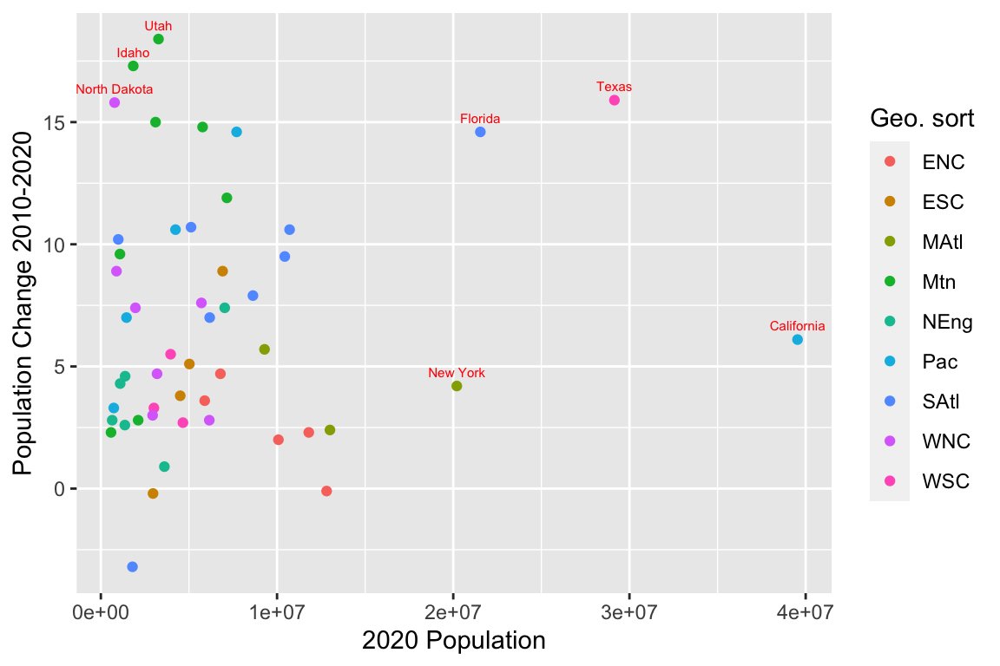

Chapter 4 Webscraping
library(tidyverse)
library(rvest)4.1 Webscraping html Tables.
In these notes, we'll explore ways to extract data from web, using technique called webscraping. Before we learn how to scrape data it's important to think about the ethics of webscraping.
4.1.1 Webscraping Responsibly
Do not attempt to scrape data that is password protected. If you had to login to a site to access information, don't scrape it.
Scraping for commercial use is often illegal. If you are planning to use data obtained through scraping for commercial use, or to post it publicly, read the webpage's terms of use carefully. You might need to obtain the company's permission.
Consider the implications for all stakeholders. Just because you can scrape data does not necessarily mean that you should.
In this class, we'll practice scraping data from public sites, where there is no perceived risk to stakeholders. We will not use the data commercially or share it publically in any unauthorized manner.
4.1.2 Example 4.1.1
Go to the following webpage [https://en.wikipedia.org/wiki/List_of_U.S._states_and_territories_by_population]. How many tables do you see?
The read.html command reads in data from a website, and the html_elements() function extracts elements of the page that are tagged as tables.
page <- read_html("https://en.wikipedia.org/wiki/List_of_U.S._states_and_territories_by_population")tables <- page %>%
html_elements("table") %>%
html_table()Let's explore the tables we've scraped from the web.
We'll work with the third table.
States <- tables[[3]]
head(States)## # A tibble: 6 x 10
## `State/federal di… `#` `2020 pop.` `#` `2010 pop.` `#` `2000 pop.` `#`
## <chr> <chr> <chr> <chr> <chr> <chr> <chr> <chr>
## 1 Massachusetts 15 7,029,917 14 6,547,629 13 6,349,097 21
## 2 Connecticut 29 3,605,944 29 3,574,097 29 3,405,565 47
## 3 New Hampshire 41 1,377,529 42 1,316,470 41 1,235,786 30
## 4 Maine 42 1,362,359 41 1,328,361 40 1,274,923 42
## 5 Rhode Island 43 1,097,379 43 1,052,567 43 1,048,319 31
## 6 Vermont 49 643,077 49 625,741 49 608,827 40
## # … with 2 more variables: 2010–2020change <chr>, Geo. sort <chr>We'll do some data cleaning and wrangling to get the table into a form we can work with.
# keep columns 1,3,5,7,9,10
States <- States[,c(1,3,5,7,9,10)]
head(States)## # A tibble: 6 x 6
## `State/federal district/… `2020 pop.` `2010 pop.` `2000 pop.` `2010–2020chang…
## <chr> <chr> <chr> <chr> <chr>
## 1 Massachusetts 7,029,917 6,547,629 6,349,097 7.4%
## 2 Connecticut 3,605,944 3,574,097 3,405,565 0.9%
## 3 New Hampshire 1,377,529 1,316,470 1,235,786 4.6%
## 4 Maine 1,362,359 1,328,361 1,274,923 2.6%
## 5 Rhode Island 1,097,379 1,052,567 1,048,319 4.3%
## 6 Vermont 643,077 625,741 608,827 2.8%
## # … with 1 more variable: Geo. sort <chr>#rename State variable
States <- States %>% rename(State=`State/federal district/territory/division/region`)
head(States)## # A tibble: 6 x 6
## State `2020 pop.` `2010 pop.` `2000 pop.` `2010–2020chang… `Geo. sort`
## <chr> <chr> <chr> <chr> <chr> <chr>
## 1 Massachusetts 7,029,917 6,547,629 6,349,097 7.4% NEng
## 2 Connecticut 3,605,944 3,574,097 3,405,565 0.9% NEng
## 3 New Hampshire 1,377,529 1,316,470 1,235,786 4.6% NEng
## 4 Maine 1,362,359 1,328,361 1,274,923 2.6% NEng
## 5 Rhode Island 1,097,379 1,052,567 1,048,319 4.3% NEng
## 6 Vermont 643,077 625,741 608,827 2.8% NEng# Keep only the 50 states
library(Lock5Data)
data(USStates)
States <- States %>% semi_join(USStates, by="State")
head(States)## # A tibble: 6 x 6
## State `2020 pop.` `2010 pop.` `2000 pop.` `2010–2020chang… `Geo. sort`
## <chr> <chr> <chr> <chr> <chr> <chr>
## 1 Massachusetts 7,029,917 6,547,629 6,349,097 7.4% NEng
## 2 Connecticut 3,605,944 3,574,097 3,405,565 0.9% NEng
## 3 New Hampshire 1,377,529 1,316,470 1,235,786 4.6% NEng
## 4 Maine 1,362,359 1,328,361 1,274,923 2.6% NEng
## 5 Rhode Island 1,097,379 1,052,567 1,048,319 4.3% NEng
## 6 Vermont 643,077 625,741 608,827 2.8% NEng# remove commas from variables
States <- States %>% mutate(`2020 pop.`=str_remove_all(`2020 pop.`, "\\,"),
`2010 pop.`=str_remove_all(`2010 pop.`, "\\,"),
`2000 pop.`=str_remove_all(`2000 pop.`, "\\,"),
`2010–2020change` = str_remove_all(`2010–2020change`, c("\\%")))
head(States)## # A tibble: 6 x 6
## State `2020 pop.` `2010 pop.` `2000 pop.` `2010–2020chang… `Geo. sort`
## <chr> <chr> <chr> <chr> <chr> <chr>
## 1 Massachusetts 7029917 6547629 6349097 7.4 NEng
## 2 Connecticut 3605944 3574097 3405565 0.9 NEng
## 3 New Hampshire 1377529 1316470 1235786 4.6 NEng
## 4 Maine 1362359 1328361 1274923 2.6 NEng
## 5 Rhode Island 1097379 1052567 1048319 4.3 NEng
## 6 Vermont 643077 625741 608827 2.8 NEng#try to convert to numeric
States <- States %>% mutate(`2020 pop.`=as.numeric(`2020 pop.`),
`2010 pop.`=as.numeric(`2010 pop.`),
`2000 pop.`=as.numeric(`2000 pop.`),
`2010–2020change` = as.numeric(`2010–2020change`))
head(States)What went wrong?
# add this code before converting to numeric
States <- States %>% mutate(`2010–2020change` = str_replace(`2010–2020change`, "−", "-"))
head(States)## # A tibble: 6 x 6
## State `2020 pop.` `2010 pop.` `2000 pop.` `2010–2020chang… `Geo. sort`
## <chr> <chr> <chr> <chr> <chr> <chr>
## 1 Massachusetts 7029917 6547629 6349097 7.4 NEng
## 2 Connecticut 3605944 3574097 3405565 0.9 NEng
## 3 New Hampshire 1377529 1316470 1235786 4.6 NEng
## 4 Maine 1362359 1328361 1274923 2.6 NEng
## 5 Rhode Island 1097379 1052567 1048319 4.3 NEng
## 6 Vermont 643077 625741 608827 2.8 NEng#try to convert to numeric
States <- States %>% mutate(`2020 pop.`=as.numeric(`2020 pop.`),
`2010 pop.`=as.numeric(`2010 pop.`),
`2000 pop.`=as.numeric(`2000 pop.`),
`2010–2020change` = as.numeric(`2010–2020change`))
head(States)## # A tibble: 6 x 6
## State `2020 pop.` `2010 pop.` `2000 pop.` `2010–2020chang… `Geo. sort`
## <chr> <dbl> <dbl> <dbl> <dbl> <chr>
## 1 Massachusetts 7029917 6547629 6349097 7.4 NEng
## 2 Connecticut 3605944 3574097 3405565 0.9 NEng
## 3 New Hampshire 1377529 1316470 1235786 4.6 NEng
## 4 Maine 1362359 1328361 1274923 2.6 NEng
## 5 Rhode Island 1097379 1052567 1048319 4.3 NEng
## 6 Vermont 643077 625741 608827 2.8 NEngCreate a table showing the total population by region in each year. Calculate the percentage change for each region from 2010 to 2020. Also display the number of states in each region.
Regions <- States %>% group_by(`Geo. sort`) %>% summarize(Pop2020=sum(`2020 pop.`),
Pop2010=sum(`2010 pop.`),
Pop2000=sum(`2000 pop.`),
PctChange = (Pop2020-Pop2010)/Pop2010*100,
States = n()
)
Regions## # A tibble: 9 x 6
## `Geo. sort` Pop2020 Pop2010 Pop2000 PctChange States
## <chr> <dbl> <dbl> <dbl> <dbl> <int>
## 1 ENC 47368533 46421564 45155037 2.04 5
## 2 ESC 19402234 18432505 17022810 5.26 4
## 3 MAtl 42492943 40872375 39671861 3.96 3
## 4 Mtn 24919150 22065451 18172295 12.9 8
## 5 NEng 15116205 14444865 13922517 4.65 6
## 6 Pac 53669422 49880102 45025637 7.60 5
## 7 SAtl 65400189 59175314 51197101 10.5 8
## 8 WNC 21616921 20505437 19237739 5.42 7
## 9 WSC 40774139 36346202 31444850 12.2 4The kable function displays a table in professional format. It also allows for captions. This function is part of the knitr package.
library(knitr)
kable(Regions, caption = "Population Growth by Region")| Geo. sort | Pop2020 | Pop2010 | Pop2000 | PctChange | States |
|---|---|---|---|---|---|
| ENC | 47368533 | 46421564 | 45155037 | 2.039933 | 5 |
| ESC | 19402234 | 18432505 | 17022810 | 5.260972 | 4 |
| MAtl | 42492943 | 40872375 | 39671861 | 3.964947 | 3 |
| Mtn | 24919150 | 22065451 | 18172295 | 12.932883 | 8 |
| NEng | 15116205 | 14444865 | 13922517 | 4.647603 | 6 |
| Pac | 53669422 | 49880102 | 45025637 | 7.596857 | 5 |
| SAtl | 65400189 | 59175314 | 51197101 | 10.519378 | 8 |
| WNC | 21616921 | 20505437 | 19237739 | 5.420436 | 7 |
| WSC | 40774139 | 36346202 | 31444850 | 12.182668 | 4 |
The stargazer package is useful for summarizing multiple variables in the same table.
library(stargazer)
#cols give names of variables to include
#summary.stat gives statistics to compute
cols <- c('2020 pop.', '2010 pop.', '2000 pop.')
stargazer(
as.data.frame(States[, cols]), type = "text",
summary.stat = c("min", "median", "max", "mean", "sd")
)##
## ====================================================================
## Statistic Min Median Max Mean St. Dev.
## --------------------------------------------------------------------
## 2020 pop. 576,851 4,581,796.0 39,538,223 6,615,195.000 7,436,143.000
## 2010 pop. 563,626 4,436,370.0 37,253,956 6,162,876.000 6,848,235.000
## 2000 pop. 493,782 4,026,890.0 33,871,648 5,616,997.000 6,185,580.000
## --------------------------------------------------------------------We plot percent change against 2020 population and color by state.
ggplot(data=States, aes(x=`2020 pop.`, y=`2010–2020change`, color=`Geo. sort`)) + geom_point() +
geom_text(data=States %>% filter(`2020 pop.` > 20000000 | `2010–2020change` > 15 ),
aes(x = `2020 pop.`, y = `2010–2020change`, label = State), vjust=-1,
size = 2, color="red") + xlab("2020 Population") + ylab("Population Change 2010-2020")
4.1.3 Practice 4.1.2
Scrape data from the site [read_html("http://tennisabstract.com/reports/atp_elo_ratings.html")].
Preview the tables available. Choose one of the tables and try to create a graph or table from it. You will likely need to do some data cleaning and wrangling.
# Type code here4.2 Webscraping with Selector Gadget
page <- read_html("https://www.imdb.com/search/title/?title_type=feature&release_date=2019-01-01,2019-12-31&sort=boxoffice_gross_us,desc")
tables <- page %>%
html_elements("table") %>%
html_table()4.2.1 Webscraping with Selector Gadget
We'll scrape data from link.
This site contains information on the 50 highest-grossing movies of 2019 (according to US box office revenue).
First, let's see what happens if we try to read the page in as a html table.
page <- read_html("https://www.imdb.com/search/title/?title_type=feature&release_date=2019-01-01,2019-12-31&sort=boxoffice_gross_us,desc")
tables <- page %>%
html_elements("table") %>%
html_table()Instead, we'll need to scrape in parts of the table individually and assemble it in R, ourselves.
We'll use the Chrome and its helpful add-on called Selector Gadget
4.2.2 Example 4.2.1 Read in page
Read in the url
page <- read_html("https://www.imdb.com/search/title/?title_type=feature&release_date=2019-01-01,2019-12-31&sort=boxoffice_gross_us,desc")4.2.3 Example 4.2.2 Scrape titles
Use Selector Gadget to help read in the titles. Format them as text.
title <- page %>%
html_nodes(".lister-item-header a") %>%
html_text() %>%
as.character()
head(title)## [1] "Avengers: Endgame" "The Lion King"
## [3] "Star Wars: The Rise Of Skywalker" "Frozen II"
## [5] "Toy Story 4" "Captain Marvel"length(title)## [1] 504.2.4 Example 4.2.3 Scrape ratings
Use Selector Gadget to help read in the IMDB ratings. Be sure to only scrape the ratings information. Format them as numeric.
rating <- page %>%
html_nodes(".ratings-imdb-rating strong") %>%
html_text() %>%
as.numeric()
head(rating)## [1] 8.4 6.9 6.5 6.8 7.7 6.8length(rating)## [1] 504.2.5 Practice 4.2.4 Scrape MPAA ratings
Read in the MPAA ratings (G, PG, PG-13, R, NC-17). Format them as character.
#Type here4.2.6 Example 4.2.5 Scrape runtimes
Read in the runtimes.
runtime <- page %>%
html_nodes(".runtime") %>%
html_text() %>%
as.character()
head(runtime)## [1] "181 min" "118 min" "141 min" "103 min" "100 min" "123 min"length(runtime)## [1] 50We'll want to remove the " min", so that runtimes are numeric. We can use str_remove() to eliminate excess text.
Since the runtimes initially contained characters, R will treat the vector as character, unless we convert it to numeric.
runtime <- page %>%
html_nodes(".runtime") %>%
html_text() %>%
as.character() %>%
str_remove(" min") %>%
as.numeric()
head(runtime)## [1] 181 118 141 103 100 123length(runtime)## [1] 504.2.7 Example 4.2.6 Scrape Genre
Scrape movie genres.
genre <- page %>%
html_nodes(".genre") %>%
html_text() %>%
as.character()
head(genre)## [1] "\nAction, Adventure, Drama "
## [2] "\nAnimation, Adventure, Drama "
## [3] "\nAction, Adventure, Fantasy "
## [4] "\nAnimation, Adventure, Comedy "
## [5] "\nAnimation, Adventure, Comedy "
## [6] "\nAction, Adventure, Sci-Fi "length(genre)## [1] 50We'll remove the "" here using str_remove() and also the excess whitespace, uing trimws(). The trimws() command eliminates white space at the beginning and end of the text. It also gets rid of the \n which is a spacing character that creates a new line, so in this case, the "" would have actually been removed even if we had not done so using str_remove().
genre <- page %>%
html_nodes(".genre") %>%
html_text() %>%
str_remove("\n") %>% # remove \n
trimws() %>% #remove excess whitespace
as.character()
head(genre)## [1] "Action, Adventure, Drama" "Animation, Adventure, Drama"
## [3] "Action, Adventure, Fantasy" "Animation, Adventure, Comedy"
## [5] "Animation, Adventure, Comedy" "Action, Adventure, Sci-Fi"length(genre)## [1] 504.2.8 Practice 4.2.7 Scrape Gross
Scrape film gross. Remove excess letters and characters and convert to numeric.
# type here4.2.9 Practice 4.2.8 Scrape Metascore
Scrape metascores. Eliminate excess spacing and format as numeric.
#type hereDo not be surprised if the length of the metascore vector is not what you expected. We'll talk about why this happens.
4.2.10 Practice 4.2.9 Scrape Votes
Scrape number of votes. Remove all commas and convert to numeric.
#type here4.2.11 Example 4.2.10 We'll combine the vectors of length 50 into a tibble.
movies2019 <- tibble(title, genre, gross, MPAA_rating, rating, runtime, votes)
head(movies2019)dim(movies2019)Why can't we add metascore to the tibble yet?
4.2.12 Example 4.2.11 Better way to scrape metascore
scrape metascore in a way that results in vectors of length 50, with NA's for missing value(s).
metascore <- page %>%
html_nodes(".ratings-bar") %>%
html_text %>%
str_remove(" ") %>%
str_remove("\n") %>%
str_split("X") %>%
map(2, .default=NA) %>%
str_remove("Metascore") %>%
str_trim() %>%
as.numeric()
head(metascore)## [1] 78 55 53 64 84 64length(metascore)## [1] 50Now we can add metascore to the tibble. We'll use the cbind() commnad, which adds a new column to a dataframe.
movies2019 <- cbind(movies2019, metascore)
head(movies2019)4.2.12.1 Practice 4.2.12 Better way to scrape MPAA Rating
Suppose we want to scape the MPAA ratings for films on the next page, between #101 and #150. We load in the url of that page.
page <- read_html("https://www.imdb.com/search/title/?title_type=feature&release_date=2019-01-01,2019-12-31&sort=boxoffice_gross_us,desc&start=101&ref_=adv_nxt")Notice that the code we used above does not return a vector of length 50. Why is this?
MPAA_rating <- page %>%
html_nodes(".certificate") %>%
html_text() %>%
as.character()
head(MPAA_rating)## [1] "R" "PG-13" "R" "R" "R" "PG-13"length(MPAA_rating)## [1] 42We could instead read in the code as part of a large chunk, as we did above, and then pull out the MPAA ratings. This will give us a vector of length 50 with NA's in the spots that were missing MPAA ratings.
Use the approach in Example 4.2.11 to scrape all MPAA ratings and fill in NA's for movies where they are missing.
#Type herelength(MPAA_rating)## [1] 42